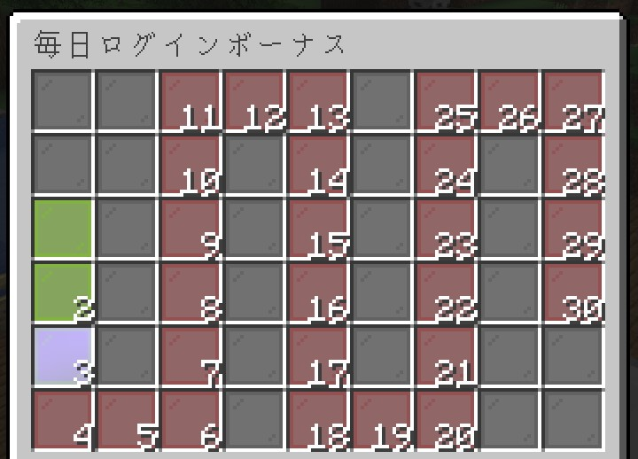
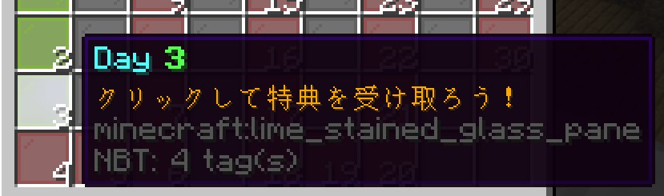
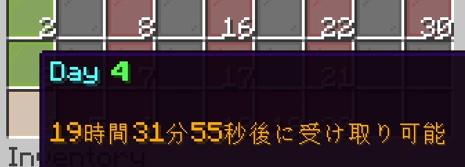

[新要素] ログインボーナスが開始！
おしゃサーバーでは、プレイヤーの皆様へ今まで以上にサーバーを楽しんでいただけるよう新要素、ログインボーナスを実装しました。
連続ログイン日数に応じて食料や日常に便利なツール、貴重な鉱石など様々なアイテムを受け取ることができます。
光っている日付をクリックすると報酬を受け取ることができます！
当日の報酬を受け取ると、次の報酬を貰えるまでの時間を確認できます。
つまり、午前6時以前では、前日分の報酬をまだ受け取ることができますが、6時以降では翌日分となります。
報酬を受け取るためには最低10分間プレイすることが必要です。
ログインボーナスの受け取りに際して不具合を確認した場合はDiscordにてSVへ連絡してください。
連続ログイン日数に応じて食料や日常に便利なツール、貴重な鉱石など様々なアイテムを受け取ることができます。
報酬の受け取りかた
サーバーに参加後、コマンド /daily を入力すると、現在の連続実績と受取可能状況を確認することができます。

光っている日付をクリックすると報酬を受け取ることができます！

当日の報酬を受け取ると、次の報酬を貰えるまでの時間を確認できます。

注意事項
ログインボーナスの管理に使用する日付は 午前6時 に更新されます。つまり、午前6時以前では、前日分の報酬をまだ受け取ることができますが、6時以降では翌日分となります。
報酬を受け取るためには最低10分間プレイすることが必要です。
ログインボーナスの受け取りに際して不具合を確認した場合はDiscordにてSVへ連絡してください。